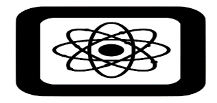
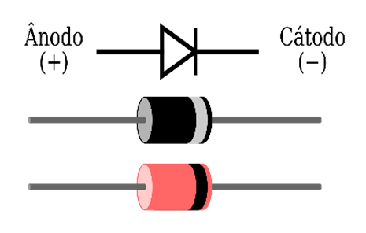
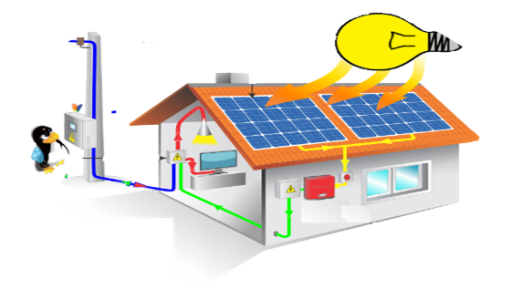
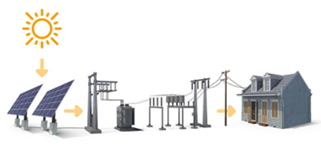

1. Fundamentos de eletricidade I
O que é a eletricidade?
É a parte da física que estuda os fenômenos que ocorrem com as cargas elétricas e/ou elétron em movimento. Quando um elétron abandona a sua órbita de origem, ou seu átomo, ele acumula energia e realiza trabalho quando esta energia é transformada em outras formas de energia, tais como; calor, luz, magnetismo, etc.
O que é a física?
É uma ciência que estuda os fenômenos que ocorrem com os corpos, quaisquer que sejam seus tamanhos. Estuda-se desde os gigantescos, como os planetas, até os microscópicos, como os átomos.
A física estuda a forma e as mudanças de forma dos corpos, as forças que os influenciam (gravidade, atrito), o movimento ou o repouso destes corpos, a energia que acumulam que liberam ou que se transforma.
A física estuda os fenômenos mecânicos, as ondas, a luz, a temperatura e a eletricidade. Na parte de eletricidade, ela estuda os fenômenos que ocorrem com os átomos, com as cargas elétricas, com os elétrons, prótons e nêutrons. Isto quando estes estão em movimento ou em repouso, ou quando estão acumulando ou liberando energia.
O átomo

Fonte: https://svgsilh.com/svg_v2/1691300.svg, Licença: CC-0
É a menor parte de um corpo que ainda resguarde as características desse corpo é chamada de átomo, ou melhor, a menor parte do ouro que ainda resgclassrda as suas características, ou seja, a menor parte do ouro que ainda é ouro é o átomo de ouro.
O átomo é composto de três pequenas partículas fundamentais: Os prótons, os elétrons e os nêutrons. Os prótons são partículas que possuem polaridade positiva (+), e são encontrados no núcleo do átomo. Os elétrons são partículas que possuem polaridade negativa (-), são encontrados circulando entorno do átomo. Os nêutrons possuem carga nula (0), são encontrados no núcleo do átomo.
Os elétrons podem se tornar livres, sair do átomo, por uso de força externa: luz, calor, magnetismo, DDP, entre outras. Quando os elétrons se movimentam para fora de seu átomo, acumulam energia e realizam trabalho quando esta energia é transformada em outro tipo de energia, como por exemplo, no calor de um ferro de passar roupas.
2. Corpos bons e corpos maus condutores elétricos
CORPOS BONS CONDUTORES
São aqueles corpos dos quais com o auxilio de força externa (mesmo de pouca intensidade), conseguimos liberar os elétrons de seus átomos com facilidade, ou seja, usando pouca força somos capazes de criar corrente elétrica.
- Ferro, cobre, alumínio, ouro, etc
- Os condutores elétricos comerciais de baixa tensão são feitos de ligas de cobre, que é um bom condutor elétrico.
- Em outros termos temos: poucos "Volts" seriam suficientes para fazer circular uma corrente elétrica pelos metais. Por isso dizemos que o metal é bom condutor elétrico.
CORPOS MAUS CONDUTORES
São aqueles corpos dos quais somente conseguimos liberar os elétrons com a utilização de grande força externa, e extrema dificuldade.
- Borracha, porcelana, madeira, vidro, pvc, etc.
- Os condutores elétricos comerciais de baixa tensão tem seu isolamento, sua capa, feita de PVC 70, que é um mau condutor elétrico. Este PVC-70 só conduz quando submetido a tensões elétricas acima de 750V.
Em outros termos temos: somente conseguiríamos fazer circular uma corrente elétrica nestes materiais usando milhares de volts. Por isso dizemos que o estes materiais são maus condutores elétricos, ou isolantes. Não existem isolantes perfeitos. Usando força suficiente (TENSÂO ELÈTRICA, VOLT) qualquer corpo é capaz de conduzir corrente elétrica, até mesmo a borracha..
CORPOS SEMICONDUTORES
Os semicondutores (Silício, Germânio) são materiais que possuem baixa condutividade elétrica. Esses elementos estão entre os condutores e isolantes, e são capazes de mudar sua condição de condução elétrica com facilidade.
Os semicondutores não conseguem conduzir corrente elétrica em condições químicas normais. Os átomos dos semicondutores são tetravalentes, ou seja, possuem apenas quatro camadas de valência, o que os torna elementos não estáveis.
Para que os materiais semicondutores possam conduzir corrente elétrica é necessário que seus átomos se agrupem para ganhar estabilidade. Isso ocorre quando há ligações químicas covalentes nas quais os átomos passam a ter oito elétrons e se tornam condutores de eletricidade.
Os semicondutores apresentam dois tipos de condução elétrica: condução intrínseca e condução extrínseca. Para que haja a condução intrínseca os semicondutores precisam receber energia (calor, luz ou a aplicação de uma tensão elétrica). Já para haver a condução extrínseca, os semicondutores precisam receber excesso de carga negativa, através da inserção de outros elementos.
Outro modo de diminuir a resistência do cristal de silício é a dopagem, que consiste em introduzir de maneira uniforme impurezas, que podem ser átomos de arsênio ou de boro. Quando introduzimos o arsênio, o semicondutor é chamado de semicondutor de tipo “N” e quando é introduzido o boro, ele é chamado de semicondutor de tipo “P”.
POLARIZAÇÃO DE UM DIODO
Quando colocamos a polaridade positiva no anodo e negativa no catodo, e fornecendo uma tensão elétrica que ultrapasse a barreira de potencial dos diodos, sendo está de 0,3 V para diodos de germânio e 0,7 V para diodos de silício, o diodo começará a conduzir a corrente elétrica que o circuito eletrônico consumidor irá solicitar da fonte geradora, logo ele irá funcionar como uma chave fechada e atuando como um condutor de elétrons, mas pode ter certeza que temos muito mais a saber sobre o seu funcionamento neste tipo de polarização

3. GTD - Geração, Transmissão e Distribuição.
Fontes de Eletricidade
É possível gerar eletricidade a partir de: atrito entre dois materiais; pressão em certos cristais; quando aquecemos ou expomos a luz certos tipos de materiais; quando expomos certos materiais a agentes químicos; ou quando forçamos a interação de campos magnéticos e/ou eletromagnéticos com o movimento de fios condutores.
Como vimos, a eletricidade pode ser gerada de várias formas e nos mais variados níveis de tensão e corrente elétrica. Contudo para o uso efetivo desta eletricidade devemos optar por fontes de eletricidade capazes de manter níveis de tensão e corrente apropriadas para o uso comercial. É destas fontes de eletricidade que vamos tratar nesta unidade.
Pilhas elétricas e Baterias
- As pilhas e as baterias possuem, basicamente, o mesmo principio de funcionamento, sendo diferenciadas em termos de construção, nível de tensão e de corrente, ou se podem ou não ser recarregadas.
- O principio de funcionamento de uma pilha é simples: Duas placas ou eletrodos são colocados em contato com um composto químico (eletrólito) capaz de arrancar elétrons de um eletrodo e acumula-os no outro eletrodo.
- No caso da pilha alcalina o eletrodo central é o positivo, enquanto o negativo é a própria carcaça externa da pilha.
Usinas Elétricas.
As grandes usinas geradoras de energia elétrica utilizam o gerador rotativo que funciona segundo o princípio da indução eletromagnética. Diferem umas das outras pela adoção da força-motriz mecânica que irá ser aplica da ao gerador.
O gerador rotativo não pode gerar ou manter seu próprio movimento, logo ele precisa de outra fonte de energia mecânica que seja capaz de manter seu movimento, tais como: A energia do movimento das águas (hidrodinâmica); a energia do movimento do ar (eólica); a energia do movimento do vapor d`água super aquecido (Térmica ou nuclear).
USINAS HIDROELÉTRICAS:
- Aproveitam a energia da queda d`água dos rios. Logo, a dependência da existência de rios caudalosos e de planaltos limitam a utilização dessa fonte de energia.
- O movimento da água arrasta consigo turbina que transfere o movimento da água para o eixo do gerador, este que tem a função de transformar energia mecânica de rotação em energia elétrica.
- Os países que mais utilizam essa fonte de energia são aqueles que possuem grandes territórios e grande quantidade de rios, tais como: Brasil, Rússia, Canadá e EUA.
- Embora essa fonte seja inesgotável e pouco poluidora, a produção de energia por usina é pequena, assim como a quantidade de usinas construídas em um rio.
Usinas Fotovoltaicas:
A usina solar fotovoltaica funciona assim: os painéis solares produzem eletricidade, que passa por um inversor solar para converter essa energia em corrente elétrica alternada para, então, ser transmitida pelas redes de transmissão de energia e distribuída para o uso em sua casa ou empreendimento.

Os painéis solares produzem energia elétrica em corrente contínua, portanto, eles precisam de um inversor solar para converter essa energia em corrente alternada (padrão elétrico para qualquer casa ou empresa conectada à rede no Brasil).
Os inversores entregam a energia produzida pelos painéis fotovoltaicos de 127V, 220V até 380 Volts. Para a transmissão de energia nas linhas de alta tensão, é preciso uma voltagem bem mais alta que isso, portanto, utilizam-se transformadores para elevar a tensão para 13.800 Volts, 69.000 Volts, 138.000 Volts e até acima de 230.000 Volts.
Como as usinas fotovoltaicas são geralmente instaladas em áreas isoladas e distantes, a sua energia é enviada aos centros urbanos por meio das linhas de transmissão, para, depois, atender ao consumo das casas, empresas e outros empreendimentos conectados à rede da distribuidora local.
Transmissão
Após a geração a energia é elevada para alta tensão, com o uso de transformadores, e transmitida para as subestações das cidades, onde são abaixados, também com uso de transformadores, para os níveis de consumo em alta, média e baixa tensão.

Distribuição
A distribuição é feita por concessionários como a LIGHT, ENEL, Eletro Paulo, entre outras. A distribuição primária é feita em alta e média tensão para grandes consumidores: 138kV, 13,8kV, 34,5kV, 25kV, 6,3kV... A distribuição secundária, para clientes comerciais e residenciais é feita em baixa tensão: 220V e 127V. Esta elevação e abaixamento da tensão é feita por transformadores elétricos de corrente alternada, C.A.
Outras fontes de energia elétrica: Termoelétricas fazem parte do sistema interligado nacional, mas a maior contribuição é das usinas hidroelétricas: Usinas térmicas, termonucleares, solares, eólicas, entre outras,
COMPOSIÇÃO DA TARIFA DE ENERGIA ELÉTRICA
Para entender o que é o Fio B, precisamos entender a composição tarifária do kWh (Quilowatt ou Kilowatt) que a concessionária cobra do consumidor final. Cada kWh é composto por:
Tarifa de Energia (TE): é o valor pago pela energia que sua casa ou empresa consome por mês. Já a tarifa de Uso do Sistema de Distribuição (TUSD): tarifa cobrada pelo uso do sistema de distribuição, ou seja, o custo da concessionária para levar a energia da fonte até o consumidor final, incluindo instalações, equipamentos, subestações, transformadores e postes.
O que é o Fio B?
O Fio B é um custo que faz parte da TUSD, pois faz parte da despesa das concessionárias de energia elétrica para chegar a residências, comércios e propriedades rurais
A cobrança do Fio B começa em 2023 – todo projeto de painéis fotovoltaicos homologado a partir de 7 de janeiro de 2023 terá que pagar esta taxa. Os projetos que foram homologados antes dessa data serão isentos da cobrança até o ano de 2045, conforme previsto na lei.
O valor do Fio B muda de acordo com as concessionárias locais de energia elétrica, de acordo com o número de consumidores atendidos na área da concessão em que a concessionária atua. TUSD LIGHT (Lei 14.300) em 2023 é aproximadamente R$30,00 para monofásico, R$50,00 para Bifásico e R$100, 00 para trifásico.
É preciso lembrar que o pagamento do Fio B se aplica somente à energia que é exportada para a rede elétrica da concessionária; a energia que é produzida e consumida instantaneamente (o chamado autoconsumo) não será taxada. Há uma discussão sobre se a taxação do fio B não é dupla tarifação, já que a taxa de manutenção, que é o fio B já é paga na disponibilidade do sistema. Hoje, após a implantação da taxação progressiva, com a lei 14.300, a Light retorna em créditos o valor da TUSD quando a injeção supera o consumo.